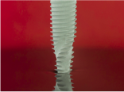
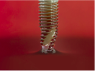

Desenvolvida para a alta previsibilidade de tratamento.
A superfície hidrofílica Acqua™ da Neodent® é a evolução da
bem-sucedida superfície NeoPoros®, desenvolvida para alcançar
resultados de sucesso mesmo em situações desafiadoras, como ossos
de baixa densidade e protocolos imediatos.(1-4)
Hidrofilia
A superficie hidrofílica apresenta um ângulo de contato menor quando
está em contato com líquidos hidrofílicos. Isto proporciona uma
maior acessibilidade dos fluidos orgânicos à superfície do implante
Acqua™.(20)
Comparativo de superfícies
Imagens geradas em laboratório

Superfície convencional

Superfície hidrofílica
Acqua™
Dr. GERT SAUER, Africa do Sul
‘‘O Helix GM® Acqua me permite fazer carga imediata em todos os meus casos
com resultados previsíveis. Essa é a principal razão pela qual estou
usando o Neodent®, mesmo em casos com osso de baixa qualidade, sempre
consigo uma boa estabilidade primária e isso me oferece uma solução
previsível para cada indivíduo’’